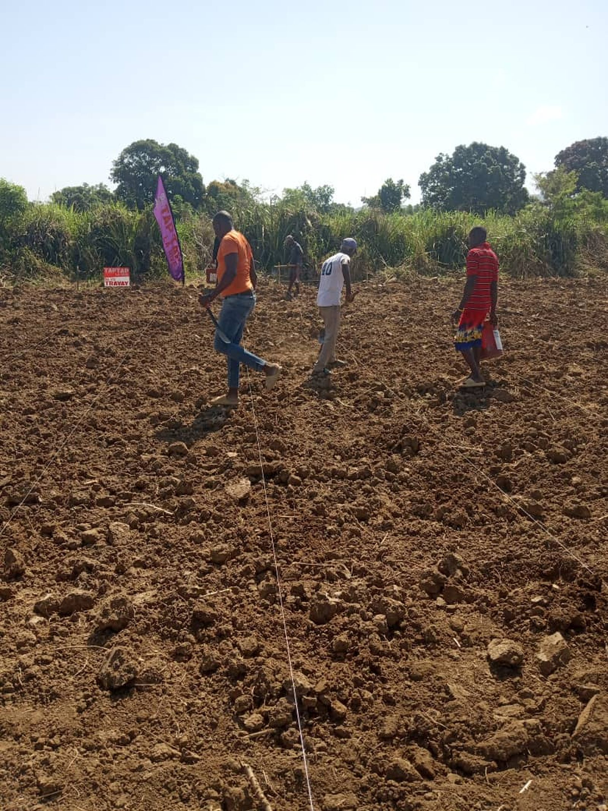

L'impact... mesure, pas estime. Impact... measured, not estimated.

310 emplois directs x 2.3 = 713 emplois totaux (directs + indirects). Les marchands, transporteurs, et fournisseurs locaux beneficient de la circulation. Modele CGE calibre par Reginald Surin (the Haitian banking sector, ancien conseiller economique du Premier Ministre).
310 direct jobs x 2.3 = 713 total jobs (direct + indirect). Merchants, transporters, and local suppliers benefit from the circulation. CGE model calibrated by Reginald Surin (the Haitian banking sector, former economic adviser to Prime Minister).
Chaque produit cultive localement est un produit non importe. Every product grown locally is a product not imported.
| Produit | Product | Import annuel | Annual import | Production KONKRET | % substitue | % substituted |
|---|---|---|---|---|---|---|
| Moringa | $2.1M | $180K | 8.6% | |||
| Cafe | Coffee | $12M | $120K | 1% | ||
| Miel | Honey | $800K | $60K | 7.5% |
$4.1 milliards de transferts de la diaspora en 2024. Frais moyens de transfert: 8-12%. KONKRET redirige une partie de cette circulation via les abonnements (Coinbase Commerce, frais < 1%) directement dans l'economie locale. Chaque dollar d'abonnement est un dollar de remise sans intermediaire.
$4.1 billion in diaspora remittances in 2024. Average transfer fees: 8-12%. KONKRET redirects part of this circulation via subscriptions (Coinbase Commerce, fees < 1%) directly into the local economy. Every subscription dollar is a remittance dollar without intermediaries.
Chaque emploi genere des revenus fiscaux locaux et nationaux via la consommation, les transactions marchandes, et les activites de transformation. Le modele CGE de Surin estime la contribution fiscale de l'ecosysteme KONKRET a l'echelle nationale.
Each job generates local and national tax revenue through consumption, merchant transactions, and processing activities. Surin's CGE model estimates the tax contribution of the KONKRET ecosystem at national scale.
Le modele d'equilibre general calculable (CGE) de Reginald Surin, calibre sur les donnees economiques haitiennes, projette l'impact macroeconomique de l'expansion KONKRET. Mis a jour trimestriellement.
Reginald Surin's Computable General Equilibrium (CGE) model, calibrated on Haitian economic data, projects the macroeconomic impact of KONKRET expansion. Updated quarterly.
Telecharger le rapport trimestriel (PDF) Download quarterly report (PDF)
| Echelle | Scale | Emplois directs | Direct jobs | PIB contribution | GDP contribution | Import substitue | Import substituted |
|---|---|---|---|---|---|---|---|
| Actuel | Current | 310 | $112K | $360K | |||
| 50 sites | 600 | $217K | $700K | ||||
| 100 sites | 1,200 | $434K | $1.4M | ||||
| 500 sites | 6,000 | $2.2M | $7M |